BER Performance of Different Equalizers
This script shows the BER performance of several types of equalizers in a static channel with a null in the passband. The script constructs and implements a linear equalizer object and a decision feedback equalizer (DFE) object. It also initializes and invokes a maximum likelihood sequence estimation (MLSE) equalizer. The MLSE equalizer is first invoked with perfect channel knowledge, then with a straightforward but imperfect channel estimation technique.
As the simulation progresses, it updates a BER plot for comparative analysis between the equalization methods. It also shows the signal spectra of the linearly equalized and DFE equalized signals. It also shows the relative burstiness of the errors, indicating that at low BERs, both the MLSE algorithm and the DFE algorithm suffer from error bursts. In particular, the DFE error performance is burstier with detected bits fed back than with correct bits fed back. Finally, during the "imperfect" MLSE portion of the simulation, it shows and dynamically updates the estimated channel response.
To experiment with this demo, you can change such parameters as the channel impulse response, the number of equalizer tap weights, the recursive least squares (RLS) forgetting factor, the least mean square (LMS) step size, the MLSE traceback length, the error in estimated channel length, and the maximum number of errors collected at each Eb/No value.
Contents
- Code Structure
- Signal and Channel Parameters
- Adaptive Equalizer Parameters
- MLSE Equalizer and Channel Estimation Parameters, and Initial Visualization
- Construct RLS and LMS Linear and DFE Equalizer Objects
- Linear Equalizer
- Decision Feedback Equalizer
- Ideal MLSE Equalizer, with Perfect Channel Knowledge
- MLSE Equalizer with an Imperfect Channel Estimate
Code Structure
This script relies on several other scripts and functions to perform link simulations over a range of Eb/No values. These files are as follows:
eqber_adaptive - a script that runs link simulations for linear and DFE equalizers
eqber_mlse - a script that runs link simulations for ideal and imperfect MLSE equalizers
eqber_siggen - a script that generates a binary phase shift keying (BPSK) signal with no pulse shaping, then processes it through the channel and adds noise
eqber_graphics - a function that generates and updates plots showing the performance of the linear, DFE, and MLSE equalizers. Type "edit eqber_graphics" at the MATLAB® command line to view this file.
The scripts eqber_adaptive and eqber_mlse illustrate how to use adaptive and MLSE equalizers across multiple blocks of data such that state information is retained between data blocks.
Signal and Channel Parameters
Set parameters related to the signal and channel. Use BPSK without any pulse shaping, and a 5-tap real-valued symmetric channel impulse response. (See section 10.2.3 of Digital Communications by J. Proakis, 4th Ed., for more details on the channel.) Set initial states of data and noise generators. Set the Eb/No range.
% System simulation parameters Fs = 1; % sampling frequency (notional) nBits = 2048; % number of BPSK symbols per vector maxErrs = 200; % target number of errors at each Eb/No maxBits = 1e6; % maximum number of symbols at each Eb/No % Modulated signal parameters M = 2; % order of modulation Rs = Fs; % symbol rate nSamp = Fs/Rs; % samples per symbol Rb = Rs * log2(M); % bit rate % Channel parameters chnl = [0.227 0.460 0.688 0.460 0.227]'; % channel impulse response chnlLen = length(chnl); % channel length, in samples EbNo = 0:14; % in dB BER = zeros(size(EbNo)); % initialize values % Create PSK modulator hMod = modem.pskmod(M); % Create a local random stream to be used by random number generators for % repeatability. hStream = RandStream('mt19937ar', 'Seed', 12345);
Adaptive Equalizer Parameters
Set parameter values for the linear and DFE equalizers. Use a 31-tap linear equalizer, and a DFE with 15 feedforward and feedback taps. Use the recursive least squares (RLS) algorithm for the first block of data to ensure rapid tap convergence. Use the least mean square (LMS) algorithm thereafter to ensure rapid execution speed.
% Linear equalizer parameters nWts = 31; % number of weights algType1 = 'rls'; % RLS algorithm for first data block at each Eb/No forgetFactor = 0.999999; % parameter of RLS algorithm algType2 = 'lms'; % LMS algorithm for remaining data blocks stepSize = 0.00001; % parameter of LMS algorithm % DFE parameters - use same update algorithms as linear equalizer nFwdWts = 15; % number of feedforward weights nFbkWts = 15; % number of feedback weights
MLSE Equalizer and Channel Estimation Parameters, and Initial Visualization
Set the parameters of the MLSE equalizer. Use a traceback length of six times the length of the channel impulse response. Initialize the equalizer states. Set the equalization mode to "continuous", to enable seamless equalization over multiple blocks of data. Use a cyclic prefix in the channel estimation technique, and set the length of the prefix. Assume that the estimated length of the channel impulse response is one sample longer than the actual length.
% MLSE equalizer parameters tbLen = 30; % MLSE equalizer traceback length numStates = M^(chnlLen-1); % number of trellis states [mlseMetric, mlseStates, mlseInputs] = deal([]); const = get(hMod, 'Constellation'); % signal constellation mlseType = 'ideal'; % perfect channel estimates at first mlseMode = 'cont'; % no MLSE resets % Channel estimation parameters chnlEst = chnl; % perfect estimation initially prefixLen = 2*chnlLen; % cyclic prefix length excessEst = 1; % length of estimated channel impulse response % beyond the true length % Initialize the graphics for the simulation. Plot the unequalized channel % frequency response, and the BER of an ideal BPSK system. idealBER = berawgn(EbNo, 'psk', M, 'nondiff'); [hBER, hLegend, legendString, hLinSpec, hDfeSpec, hErrs, hText1, hText2,... hFit, hEstPlot, hFig, hLinFig, hDfeFig] = eqber_graphics('init', chnl, ... EbNo, idealBER, nBits);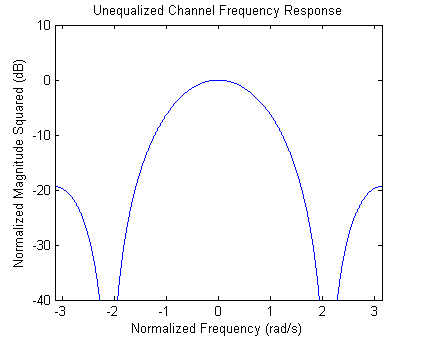 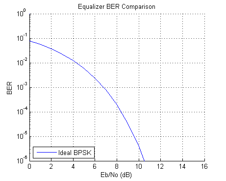
Construct RLS and LMS Linear and DFE Equalizer Objects
The RLS update algorithm is used to initially set the weights, and the LMS algorithm is used thereafter for speed purposes.
alg1 = eval([algType1 '(' num2str(forgetFactor) ')']); linEq1 = lineareq(nWts, alg1); alg2 = eval([algType2 '(' num2str(stepSize) ')']); linEq2 = lineareq(nWts, alg2); [linEq1.RefTap, linEq2.RefTap] = ... deal(round(nWts/2)); % Set reference tap to center tap [linEq1.ResetBeforeFiltering, linEq2.ResetBeforeFiltering] = ... deal(0); % Maintain continuity between iterations dfeEq1 = dfe(nFwdWts, nFbkWts, alg1); dfeEq2 = dfe(nFwdWts, nFbkWts, alg2); [dfeEq1.RefTap, dfeEq2.RefTap] = ... deal(round(nFwdWts/2)); % Set reference tap to center forward tap [dfeEq1.ResetBeforeFiltering, dfeEq2.ResetBeforeFiltering] = ... deal(0); % Maintain continuity between iterations
Linear Equalizer
Run the linear equalizer, and plot the equalized signal spectrum, the BER, and the burst error performance for each data block. Note that as the Eb/No increases, the linearly equalized signal spectrum has a progressively deeper null. This highlights the fact that a linear equalizer must have many more taps to adequately equalize a channel with a deep null. Note also that the errors occur with small inter-error intervals, which is to be expected at such a high error rate.
See eqber_adaptive.m for a listing of the simulation code for the adaptive equalizers.
firstRun = true; % flag to ensure known initial states for noise and data eqType = 'linear'; eqber_adaptive;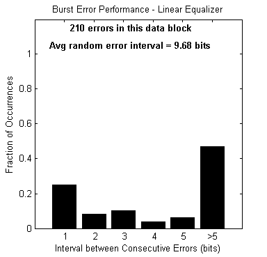 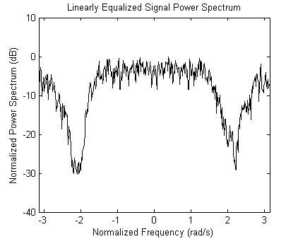 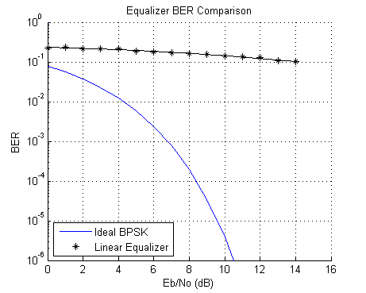
Decision Feedback Equalizer
Run the DFE, and plot the equalized signal spectrum, the BER, and the burst error performance for each data block. Note that the DFE is much better able to mitigate the channel null than the linear equalizer, as shown in the spectral plot and the BER plot. The plotted BER points at a given Eb/No value are updated every data block, so they move up or down depending on the number of errors collected in that block. Note also that the DFE errors are somewhat bursty, due to the error propagation caused by feeding back detected bits instead of correct bits. The burst error plot shows that as the BER decreases, a significant number of errors occurs with an inter-error arrival of five bits or less. (If the DFE equalizer were run in training mode at all times, the errors would be far less bursty.)
For every data block, the plot also indicates the average inter-error interval if those errors were randomly occurring.
See eqber_adaptive.m for a listing of the simulation code for the adaptive equalizers.
close(hFig(ishghandle(hFig)));
eqType = 'dfe';
eqber_adaptive;
 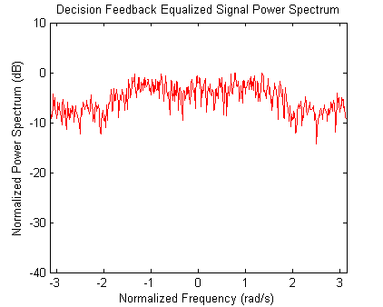 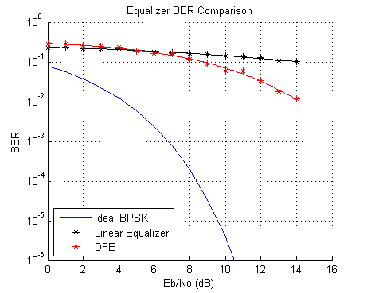
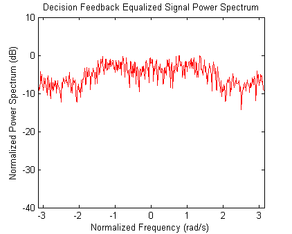 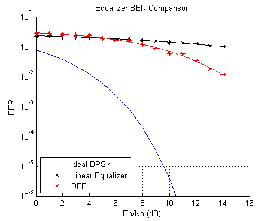 Ideal MLSE Equalizer, with Perfect Channel Knowledge
Run the MLSE equalizer with a perfect channel estimate, and plot the BER and the burst error performance for each data block. Note that the errors occur in an extremely bursty fashion. Observe, particularly at low BERs, that the overwhelming percentage of errors occur with an inter-error interval of one or two bits.
See eqber_mlse.m for a listing of the simulation code for the MLSE equalizers.
close(hLinFig(ishghandle(hLinFig)), hDfeFig(ishghandle(hDfeFig))); eqType = 'mlse'; mlseType = 'ideal'; eqber_mlse;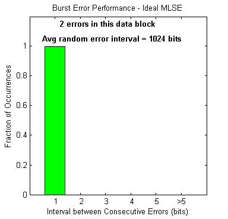 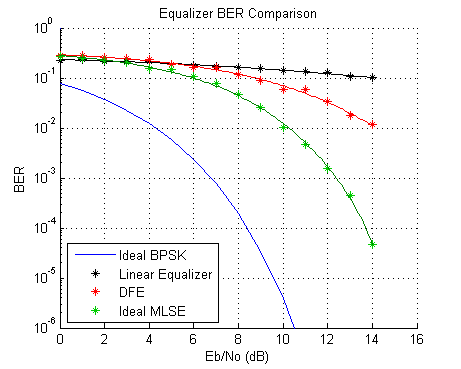
MLSE Equalizer with an Imperfect Channel Estimate
Run the MLSE equalizer with an imperfect channel estimate, and plot the BER and the burst error performance for each data block. These results align fairly closely with the ideal MLSE results. (The channel estimation algorithm is highly dependent on the data, such that an FFT of a transmitted data block has no nulls.) Note how the estimated channel plots compare with the actual channel spectrum plot.
See eqber_mlse.m for a listing of the simulation code for the MLSE equalizers.
mlseType = 'imperfect';
eqber_mlse;
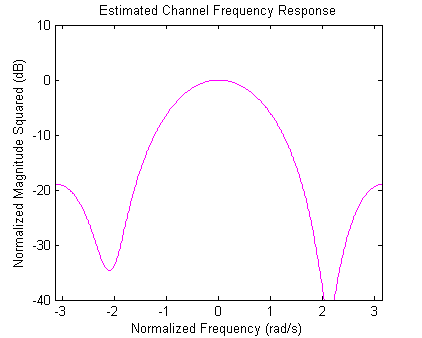 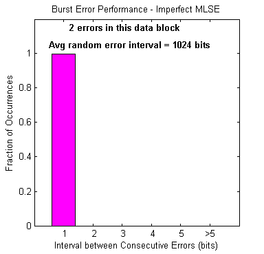 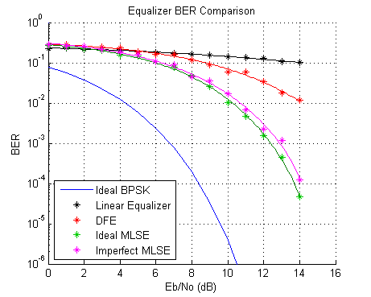